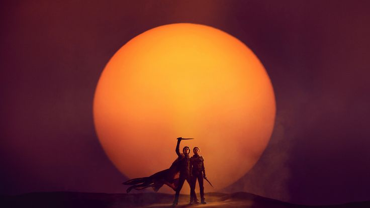

SOBRE O PROJETO
Além do que o filme representa.
Duna não é apenas uma jornada por um planeta distante. É também uma história sobre poder, crenças e as consequências de nossas escolhas. E um dos filmes mais importantes da minha vida
O Entendendo Duna nasceu para acompanhar dois tipos de espectadores: quem quer começar nesse universo pela primeira vez e quem terminou os filmes com perguntas que ainda merecem ser exploradas.

TEMAS DO UNIVERSO
Muito além do que se vê.
Alguns dos assuntos que dão profundidade à experiência. Apresentados sem revelar momentos importantes dos filmes.
-
Arrakis
O planeta desértico e sua importância para TODO o universo.
-
As Grandes Casas
Famílias, alianças e interesses em disputa.
-
A especiaria
O recurso que influencia a economia e o poder.
-
Poder e crença
As relações entre liderança, religião e destino.
-
Cinema
Imagem, som e escolhas de direção nos dois filmes.
EXPERIÊNCIA INTERATIVA · SEM SPOILERS
Quem você seria
em Arrakis?
O que suas decisões dizem sobre você? Responda a sete perguntas e descubra qual personagem se aproxima mais das suas escolhas.
Descobrir meu personagem